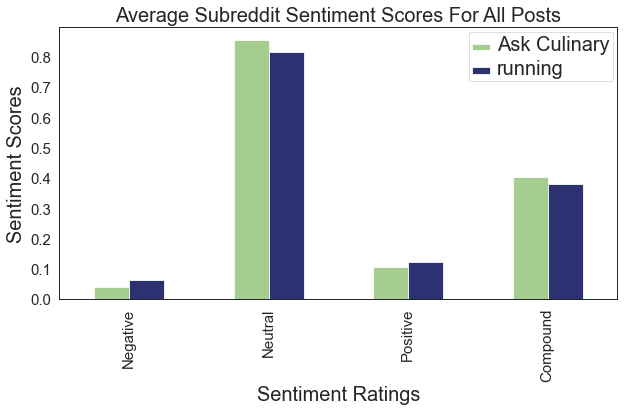
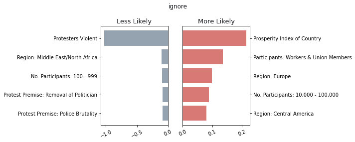

About
I am a data scientist who can provide a fresh perspective and clear vision to help explain complex data.
I just completed a 3 month data science boot camp offered by General Assembly, which gave me a solid foundation of Python, statistics, SQL, and various types of modeling, such as regression, sentiment analysis and neural networks.
I worked for IBM for about 10 years in an application development role. More recently, I began getting involved with sports analytics and sports betting. Now I'd like to widen my view to look at applying data science to other fields.
I am currently based in Las Vegas, NV but am open to working remotely or relocating.
Project: TED Talk Text Generator
Interest in Artificial Intelligence and text generation spiked in May of 2020, when Open AI Labs released a new version of their deep learning model called GPT-3. GPT-3 is a highly trained text generation engine built by reading 45 TB of data from public web sites, and electronic books and other sources. GPT-3 uses 175 billion parameters, and produces an amazingly high level of quality text.
This project attempts to pursue if and how a simple text generator could be built, and whether the quality of the output text could pass as something legible and understood by humans.
Data
All text generation models require a group of text, also called a corpus. This project used the BeautifulSoup Python library to scan the TED.com library browse page to retrieve a list of URLs for all talks in English. This list of all talks can then be used to scrape the transcript text for each talk.
- Scraping TED.com created a corpus of 4,384 talks.
- Using the entire corpus overloaded the Google Colab environement, so a smaller corpus of just the top 20 most viewed talks was used.
- Top 20 talks transcripts consisted of approximately 270,000 characters.
Modeling
Text generation with machine learning is essentially a multiclass classification problem.
Classes are the labels assigned to the next character or word a model is predicting, also known as it's target variable (y).
For example, in the sentence "Welcome to my TED talk.", a model uses a sequence length of 8, would use the first 8 characters as its input variables, in order to predict the 9th character.
Various configurations of Long Short Term Memory recurrent neural networks were used to create models to predict (generate) characters, after being trained on the corpus.
Output
Using a starting point of a random 40 character sequence in the corpus, the model was used to predict the next 600 characters.
The output text was fairly accurate for the early portions of text, but then would become unreadable. (The original 40 character sequence in red.)
re can do it faster. Lowcost providers can do it cheaper. So what really matters are the more rightbrained creative conceptual kinds of abilities. This is no surprise though if you look at the insights of contemporary psychology. It turns out that we cant even be in a group of people without instingtively mindlrming something tr musi but one in this woul world. I tas 190 million people didd from this kind of worthiness. Fo earter. When youre io the lowert resson there because when they cid that.with the pame thing. The sewr of shis ptise of this lide of madies and shose are amrays that farcer. When you choose to view stress in this
Conclusions
In general, it seems as if the models would predict the next characters and sometimes words, but it begs the question: Is this text generation? At times the text generated was simply a repeat of a different, randomly selected portion of the corpus. It's possible that a larger corpus would provide a larger vocabulary, and more randomness, hence presenting a more interesting output.
More information and full readme found in the Github repository.Reddit Natural Language Processing
This project aimed to build classification models and perform sentiment analysis for two separate Reddit categories.
Consider the two activities:
- Cooking
- Running
In contrast, running is primarily a solitary activity.
Is being alone necessarily a bad thing? In regards to text classification, would we expect to see more negative sentiment classifications in text that is more related to independently performed activities?
The general consensus of the medical field seems to agree, that too much alone time is not healthy. So the expection is that the running Reddit posts would have a higher number of words such as "alone", "lonely", "lone", etc. This would also lead to a more negative sentiment score for the running posts as compared to the culinary posts.
Data
Data was collected from reddit.com using the Pushshift API to gather over 8,000 posts for each of two subreddits.
Modeling
The project is grouped into two logical divisions. One segment involved building classifiers, which would label a post into one of two subreddit categories.
The other segment of the project was work using SentimentIntensityAnalyzer, part of nltk.sentiment.vader. The Natural Language Toolkit (NLTK), provides several tools to parse and analyze text data.
Output
Every post in both the Ask Culinary and Running subreddits is assigned a compound sentiment score, created by the SentimentIntensityAnalyzer. These scores are a normalized version of their negative, neutral, and positive rankings, and range from -1 to +1.
The following shows the relative positivity or negativity of all posts in both subreddits.

In the 8,000 Ask Culinary records, the word "alone" appears 40 times, and the word lonely appears twice.
In the 8,000 Running records, the word "alone" appears 125 times, along with lesser occurrences of the words: lonely, lone, lonelier, and loneliness.
Conclusions
Using the outputs from the VADER SentimentIntensityAnalyzer module, the Running posts do in fact have a more negative overall sentiment. It is still too early to make any large-scale statements about the human behavior or personal well-being of the users of the Ask Culinary group versus the Running users, but the text collected from the Running subReddit does show a clear (albeit slight) negative bias.
More information and full readme found in the Github repository.Mass Protests
This is a group project completed during a General Assembly boot camp, with the following team members:
The Mass Mobilization Project hosts data about citizen movements against governments. The original intent of the MM study was to inform foreign policy and understand the impact of mass mobilizations outside the United States. One main question to study was could we accurately predict a government's response to a given protest.
Data
The Mass Mobilization Project provided the bulk of the data set, which scraped information for over 17,000 protests across the world
from the New York Times, Washington Post, Christian Science Monitor, and Times of London from 1990-2020.
A protest record required 50 or more participants to qualify.
Other sources that were added to supplement the Mass Mobilization data:
- Population data as provided by the United Nations
- A Prosperity Index rating as calculated by the Legatum Institute
Modeling
After cleaning data and encoding categorical variables, several different modeling techniques were employed:
- Multilabel classifier
- Seven different logistic regression models - one for each of the possible state responses
- Due to an imbalanced dataset (over 50% of state responses were "Ignore"), the data was filtered to only include a record which was not ignored, and modeled again
Output
Metrics for the models had various results, given each target variable (state response):
| Target | cross val | specificity | precision | recall |
|---|---|---|---|---|
| ignore | 0.787 | 0.533 | 0.700 | 0.894 |
| crowd dispersal | 0.726 | 0.316 | 0.727 | 0.899 |
| arrests | 0.619 | 0.276 | 0.343 | 0.861 |
| accommodation | 0.726 | 0.735 | 0.364 | 0.581 |
| killings | 0.779 | 0.648 | 0.224 | 0.797 |
| beatings | 0.793 | 0.595 | 0.242 | 0.852 |
| shootings | 0.683 | 0.584 | 0.180 | 0.726 |
Conclusions
Conclusions for the ignore target were relatively straight forward and expected. For instance, governments were more likely to ignore protests in countries with a higher prosperity index score. An interesting nuance in the findings is governments were less likely to ignore small protests and more likely to ignore larger protests.
More information and full readme found in the Github repository.
Ames, IA Housing
Interest in Artificial Intelligence and text generation spiked in May of 2020, when Open AI Labs released a new version of their deep learning model called GPT-3. GPT-3 is a highly trained text generation engine built by reading 45 TB of data from public web sites, and electronic books and other sources. GPT-3 uses 175 billion parameters, and produces an amazingly high level of quality text.
This project attempts to pursue if and how a simple text generator could be built, and whether the quality of the output text could pass as something legible and understood by humans.
Data
All text generation models require a group of text, also called a corpus. This project used the BeautifulSoup Python library to scan the TED.com library browse page to retrieve a list of URLs for all talks in English. This list of all talks can then be used to scrape the transcript text for each talk.
- Scraping TED.com created a corpus of 4,384 talks.
- Using the entire corpus overloaded the Google Colab environement, so a smaller corpus of just the top 20 most viewed talks was used.
- Top 20 talks transcripts consisted of approximately 270,000 characters.
Modeling
Text generation with machine learning is essentially a multiclass classification problem.
Classes are the labels assigned to the next character or word a model is predicting, also known as it's target variable (y).
For example, in the sentence "Welcome to my TED talk.", a model uses a sequence length of 8, would use the first 8 characters as its input variables, in order to predict the 9th character.
Various configurations of Long Short Term Memory recurrent neural networks were used to create models to predict (generate) characters, after being trained on the corpus.
Output
Using a starting point of a random 40 character sequence in the corpus, the model was used to predict the next 600 characters.
The output text was fairly accurate for the early portions of text, but then would become unreadable. (The original 40 character sequence in red.)
re can do it faster. Lowcost providers can do it cheaper. So what really matters are the more rightbrained creative conceptual kinds of abilities. This is no surprise though if you look at the insights of contemporary psychology. It turns out that we cant even be in a group of people without instingtively mindlrming something tr musi but one in this woul world. I tas 190 million people didd from this kind of worthiness. Fo earter. When youre io the lowert resson there because when they cid that.with the pame thing. The sewr of shis ptise of this lide of madies and shose are amrays that farcer. When you choose to view stress in this
Conclusions
In general, it seems as if the models would predict the next characters and sometimes words, but it begs the question: Is this text generation? At times the text generated was simply a repeat of a different, randomly selected portion of the corpus. It's possible that a larger corpus would provide a larger vocabulary, and more randomness, hence presenting a more interesting output.
More information and full readme found in the Github repository.